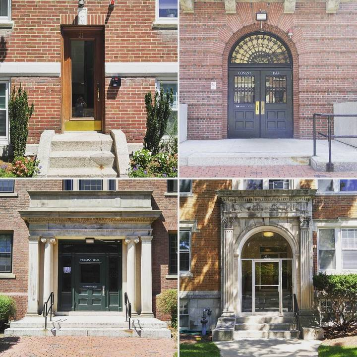

ART PROJECTS
Art Projects。
Things worth a second look.
Doorways, gardens, familiar streets and places far from home. A collection of things we’ve noticed, photographed, drawn and written about.

Photography
A study in doorways

Travel sketches / Maps / Postmarks
Drawing a place, marking a moment

Photography / Gardening
Getting to know the soil

Urban photography
A closer look at familiar places
Travel photography
What stays with us

Photography / Travel maps
Our family, on the road